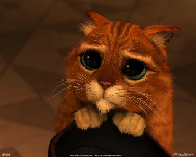

| I've been cheated by you since I don't know when So I've made up my mind, it must come to an end Look at me now, will I ever learn? I don't know how but I suddenly lose control There's a fire within my soul Just one look and I can hear a bell ring One more look and I forget everything, o-o-o-oh Mamma mia, here I go again My my, how can I resist you? Mamma mia, does it show again? My my, just how much I've missed you Yes, I've been broken hearted Blue since the day we parted Why, why did I ever let you go? Mamma mia, now I really know My my, I could never let you go I've been angry and sad about the things that you do I can't count all the times that I've told you we're through And when you go, when you slam the door I think you know that you won't be away too long You know that I'm not that strong Just one look and I can hear a bell ring One more look and I forget everything, o-o-o-oh Mamma mia, here I go again My my, how can I resist you? Mamma mia, does it show again? My my, just how much I've missed you Yes, I've been broken hearted Blue since the day we parted Why, why did I ever let you go? Mamma mia, even if I say Bye bye, leave me now or never mamma mia, it's a game we play Bye bye doesn't mean forever Mamma mia, here I go again My my, how can I resist you? Mamma mia, does it show again? My my, just how much I've missed you Yes, I've been broken hearted Blue since the day we parted Why, why did I ever let you go Mamma mia, now I really know My my, I could never let you go |
Podváděl jsi mě, už ani nevím od kdy Tak jsem si umínila, že to musí skončit Teď se na mě podívej, poučím se někdy? Nevím jak, ale náhle ztrácím kontrolu Mám oheň v duši Jen jediný pohled a slyším zvonit zvon Jeden další pohled a vše zapomenu, u-u-u Mamma mia, je to tady zase Páni, páni, jak ti mohu odolat? Mamma mia, ukáže se to znova? Páni, páni, jak moc jsi mi chyběl Ano, měla jsem zlomené srdce Sklíčená ode dne, kdy jsme se rozešli Proč, proč jsem tě kdy nechala jít? Mamma mia, teď už vím jistě Páni, páni, neměla jsem tě nikdy nechat odejít Byla jsem naštvaná a smutná z věcí, které jsi provedl Nespočítám, kolikrát jsem ti řekla, že je konec A když jsi odešel, zabouchl za sebou dveře Myslim si že jsi věděl, že nebudeš pryč příliš dlouho Víš, že nejsem tak silná Jen jediný pohled a slyším zvonit zvon Jeden další pohled a vše zapomenu, o-o-o Mamma mia, je to tady zase Páni, páni, jak ti mohu odolat? Mamma mia, ukáže se to znova? Páni, páni, jak moc jsi mi chyběl Ano, měla jsem zlomené srdce Sklíčená ode dne, kdy jsme se rozešli Proč, proč jsem tě kdy nechala jít? Mamma mia, i když jsem řekla Sbohem, opusť mě teď nebo nikdy Mamma mia, byla to hra, kterou jsme hráli Sbohem neznamená navždy Mamma mia, je to tady zase Páni, páni, jak ti mohu odolat? Mamma mia, ukáže se to znova? Páni, páni, jak moc jsi mi chyběl Ano, měla jsem zlomené srdce Sklíčená ode dne, kdy jsme se rozešli Proč, proč jsem tě kdy nechala jít? Mamma mia, teď už vím jistě Páni, páni, neměla jsem tě nikdy nechat odejít |